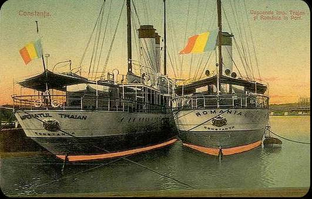

Transportul si Revolutia Industriala
Vapoare
Folosirea vapoarelor pentru transport a fost un element crucial în istoria transportului maritim și a contribuit semnificativ la dezvoltarea comerțului, a călătoriilor și a relațiilor internaționale. Iată câteva aspecte importante ale folosirii vapoarelor pentru transport:

Transportul maritim de mărfuri: Vapoarele au fost folosite pentru transportul unei game variate de mărfuri pe râuri, mări și oceane. Ele au permis comerțul la nivel mondial, facilitând transportul mărfurilor între diferite regiuni și continente. De la materii prime la produse finite, vapoarele au fost esențiale pentru logistica și distribuția bunurilor la nivel global.
Transportul de pasageri: Înainte de apariția aviației comerciale, vapoarele erau principala opțiune pentru călătoriile pe distanțe lungi peste apă. Acestea au fost utilizate pentru călătoriile intercontinentale, precum și pentru călătoriile de agrement și turism. Vapoarele de croazieră și navele de pasageri au oferit călătorilor confort, facilități și experiențe unice pe mare.
Transportul militar: Vapoarele au jucat un rol crucial în transportul militar și în proiectarea puterii navale a statelor. Ele au fost folosite pentru deplasarea trupelor, echipamentelor și proviziilor militare pe mare în timp de război sau pentru proiectarea puterii militare în diferite regiuni ale lumii.
Explorare și descoperire: Vapoarele au fost utilizate și pentru explorarea și descoperirea noilor teritorii și rutelor comerciale. Expedițiile maritime au deschis noi rute de navigație, au descoperit noi insule și continente și au contribuit la expansiunea cunoașterii geografice și a influenței culturale în întreaga lume.
Impactul asupra economiei și dezvoltării: Folosirea vapoarelor pentru transport a stimulat creșterea economică și dezvoltarea infrastructurii portuare și maritime în întreaga lume. Ele au contribuit la dezvoltarea unor orașe portuare importante și la prosperitatea economiei locale și regionale prin facilitarea comerțului și a transportului de mărfuri și persoane.